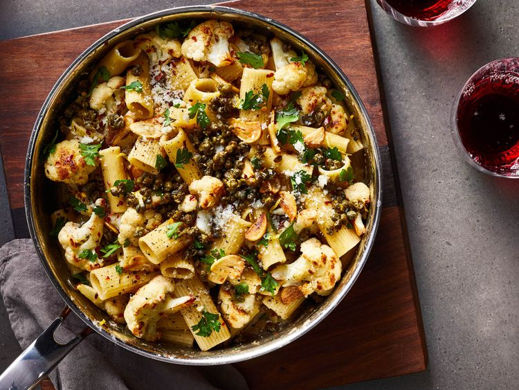

Pasta

Description
Pasta Bolognese that's easy to make and feeds a family.
Ingredients
- 1 tablespoon olive oil
- salt and ground black pepper to taste
- 1 medium sweet onion, chopped
- 4 medium carrots, chopped
- 1 (16 ounce) package rotini pasta
- 1 tablespoon minced garlic
Steps
- Preheat oven to 450°F. Bring a large pot of salted water to a boil. Cook pasta until package directions for al dente, about 10 minutes; drain and reserve about 1 cup cooking water.
- Toss cauliflower with salt, black pepper, and half of oil on a large rimmed baking sheet. Arrange cauliflower in a single layer; roast in preheated oven until deeply golden brown, about 25 minutes, tossing halfway through to ensure even browning.
- When cauliflower is about 5 minutes from being done, heat remaining olive oil in a deep 12-inch skillet over medium-high. Add capers, and cook, spooning hot oil over capers, until crispy, about 3 minutes. Remove capers with a slotted spoon, and set aside on a plate lined with paper towels. Reduce heat to medium; add garlic, anchovies, and red pepper. Cook until garlic is pale golden and anchovies have melted into oil, 1 to 2 minutes.
- Add pasta, roasted cauliflower, lemon zest, 1/4 cup parsley, and 1/2 cup cooking water to skillet; toss to coat until glossy. Remove from heat, and add 2 tablespoons cheese. Tossing pasta constantly, add additional cooking water as needed for sauce to reach desired consistency.
- Top pasta with crispy capers, remaining 2 tablespoons cheese, and remaining 1/4 cup parsley. Divide evenly among bowls, and top with additional cheese.